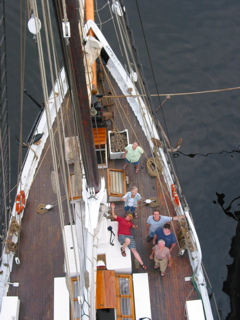

Day 2 — 13 June 2005
Bright sunshiny day, with lazy warm winds. Fell asleep on deck somewhere at least twice. It was fun too see all of the windjammers head out this morning too. All of the passengers also helped pull the ropes to raise the sails.

That evening was also the Schooner GAM, which is just where most of the schooners get together somewhere, and tie up to each other. This way you can walk from one to the next and get to see all of the ships. There is a lot of interesting variety between all of the different ships. Ranging in size, ruggedness, and passengers.

During this, the cook also grabbed a couple of peoples' cameras and climbed up the sail masts and took a few pictures from up above. That was spiffy neat.